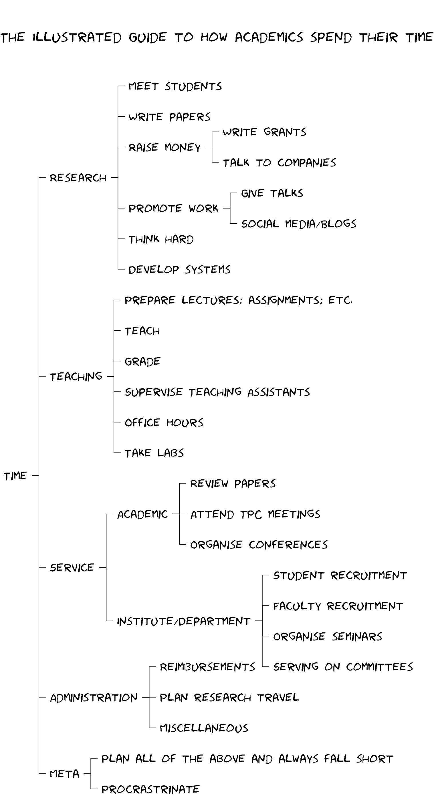
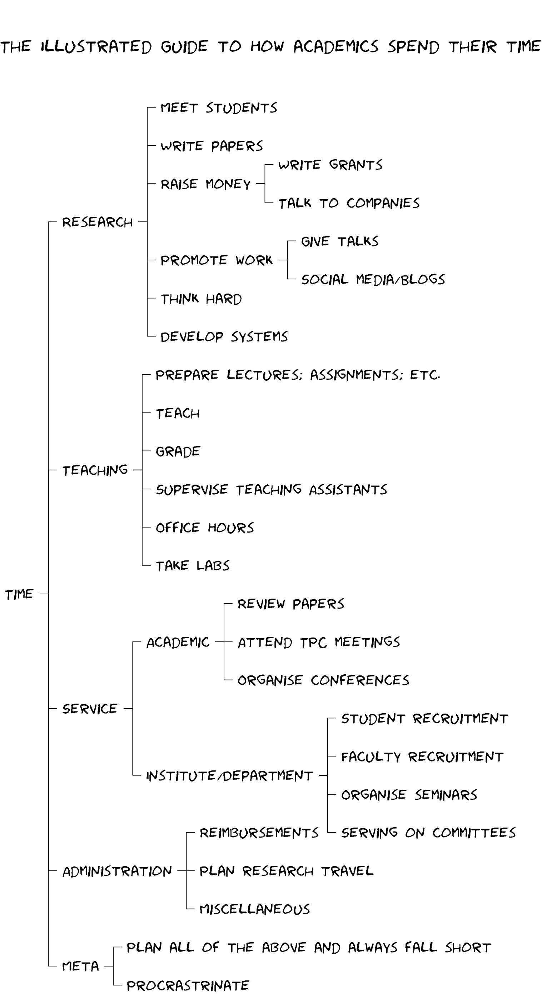

How do Academics spend their time! ¶
I recently joined as a CS faculty at IIT Gandhinagar. In this blog post, I wanted to highlight some of the roles that an academic has to play. I'll keep this post short with the illustration speaking it all!

I recently joined as a CS faculty at IIT Gandhinagar. In this blog post, I wanted to highlight some of the roles that an academic has to play. I'll keep this post short with the illustration speaking it all!
